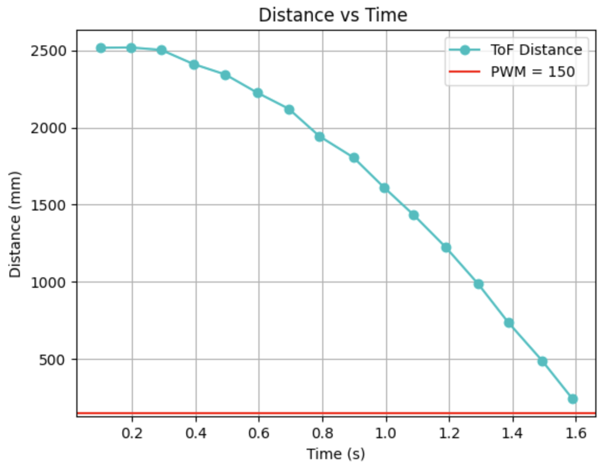
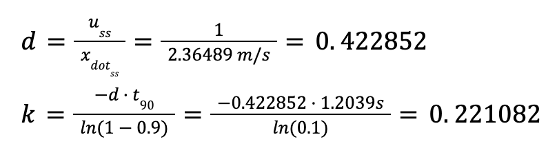

Lab 7: Kalman Filtering
ESTIMATING DRAG & MOMENTUM:
To estimate my drag and momentum, I started with a step input, u(t), of 150 PWM, which is 58.8% of the maximum PWM. I selected this value because my calibration factor is 1.8, which results in one set of wheels operating at 250 PWM and the other at 150 PWM. Since 250 PWM is the maximum, I used 150 PWM as the input. I ran my code multiple times with this input. Initially, I set the data collection time to one second but found that I couldn't gather enough data points to determine the steady-state speed. Therefore, I increased the collection time to two seconds, which allowed me to obtain sufficient data for analysis. This is the data I got:
|  |  |
From this trial of 150 PWM input, my 90% of speed is 2.36489 m/s which happens at approximately 1.204 seconds. I then used the equations from lecture to estimate the values for drag and momentum:
For this I created a new case command that you can find here:
INITIALIZING KALMAN FILTER (PYTHON):
Given the values found before, the matrices A and B are
...
IMPLEMENTING KALMAN FILTER IN JUPYTER:
...
IMPLEMENTING KALMAN FILTER ON THE ROBOT:
...
REFERENCES:
For this lab I referenced, Stephan Wagner's and Mikayla Lahr's labs from previous years. I also used ChatGPT to help with the grammar.